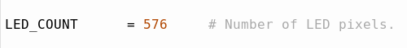

In the Raspberry Pi Imager, install Raspberry Pi OS (Legacy) on the micro SD card.
Connect the monitor, keyboard, and mouse to the Raspberry Pi.
Insert the micro SD card into the Raspberry Pi.
Connect power to the Raspberry Pi to boot it up.
Follow the instructions in the setup pages. Connect to the internet, and perform the prompted update on first launch. Note down the username and password that are utilized.
Install Python 3.9.9.
Attention
MoonShineP DOES NOT SUPPORT OTHER VERSIONS OF PYTHON
This following command line will open a file editor. To deactivate audio output, edit the .conf file by entering the following command:
sudonano/etc/modprobe.d/snd-blacklist.conf
A new terminal window will open. In this window add the following line text:
blacklistsnd_bcm2835
Then save file with CTRL + O.
And close the editor with CTRL + X.
We also need to edit another file. To do so, enter:
sudonano/boot/config.txt
When the editor is opened, comment out the following line with a # at the beginning:
dtparam=audio=on
i.e.,
#dtparam=audio=on
Then save file with CTRL + O.
And close the editor with CTRL + X.
Reboot the Raspberry Pi by entering:
sudoreboot
Download rpi_ws281x library by entering:
cd
gitclonehttps://github.com/jgarff/rpi_ws281x
Next, modify the following lines to specify using the SK6812 protocol:
Using the file explorer, open the main.c file found in /home/pi/rpi_ws281x/
The line of “STRIP_TYPE WS2811_STRIP_RGB” is turned on by default for LED ws2811 (should be Line 63), so turn it off by adding // at the beginning of the line.
Instead, turn on the line of “STRIP_TYPE WS6812_STRIP_RGBW” (should be line 64) for SK6812 by deleting the // at the beginning of the line.
On the line beginning with ‘define HEIGHT’ (should be line 67) edit the number to 1.
The value of the line beginning with ‘define WIDTH’ is unimportant and should be left at its default (should be line 66). This is because it is expected that the user will use a different number of LED strips for the moonlight array (two LED strip should suffice) and sunlight/twilight array (likely need more than two LED strips). The different number of LEDs being used for the two arrays are specified in the python file moonshine_moon.py and moonshine_sun.py, detailed later.
A real time clock module is optional but recommended. We recommend that the user runs the Raspberry Pi offline, and instead uses the RTC to keep time. This is because when the Raspberry Pi is online it will automatically update to the local time. This may use daylight saving time, DST, which can be troublesome. The RTC is also essential if the Raspberry Pi is used in a location with no internet connection.
On the task bar of the main Linux window of Raspberry Pi, go to the Start menu (top left button) and enable the RTC module by selecting the following options: > Preferences > Raspberry Pi Configuration > Interfaces > I2C Enable > OK
When the terminal returns: “Is the time above correct?”, respond accordingly (Y/N).
When the terminal returns: “Do you see 68 in the info listed above?”, respond accordingly (Y/N). (Note to user: you may see UU instead of 68)
Note
This rtc installation works for both DS 1307 or DS 3231 RTC chips
Turn off DST by setting the time zone to UTC. In terminal, enter:
sudoraspi-config
Select option 5 Internationalization Options
Select 12 Change Time Zone
At the bottom select None of the above
Select UTC and OK
Change Raspberry Pi’s clock to the user’s current time (without DST, even if the user is currently experiencing DST), by entering into the terminal terminal:
sudodate-s'YYYY-MM-DD hh:mm:ss'
Change the above to the user’s current time, for example ‘2022-01-01 01:01:00’.
Copy the time from the Raspberry Pi system to the Hardware RTC by entering:
Download the control_moon and control_sun folders (download in Download files).
control_moon contains moonshine_moon.py
control_sun contains moonshine_sun.py
Move the two folders to the Raspberry Pi Desktop.
Note
In moonshine_moon.py, the line of LED_PIN = 18 specifies the communication with the moonlight LED strip through the GPIO 18. In moonshine_sun.py, the line of LED_PIN = 21 controls the sunlight/twilight LED strip through GPIO 21 instead.
In additional, download clear_moon.py and clear_sun.py put them directly on the Raspberry Pi Desktop.
Running MoonShineP using the Linux systemd service manager allows it to recover and resume light re-creation automatically, in the unlikely event of a crash.
The line of “ExecStart=…” instructs system service to locate the MoonShineP python script in the correct directory. Restart=always and RestartSec=3 are configured to restart moonshine_moon.py within 3 seconds upon closing (i.e., the script crashing).
Then save file with CTRL + O. CTRL + X to close the editor.
When prompted for the file name, confirm that it is moonshine_moon.service and save.
Refresh the system service files. It may ask for the username and password (if so enter the username and password). Enter in terminal:
sudosystemctldaemon-reload
(Optional) If the user is recreating sunlight and twilight as well, repeat the above steps, from 1 to 4, to make another service for control_sun/moonshine_sun.py
For step 1, use a different file name:
sudonano/etc/systemd/system/moonshine_sun.service
For step 2, replace the line of ExecStart=... with
For step 3, save the file with name moonshine_sun.service
Note
Every time a .service file is edited, it requires a refresh (see Step 4).
Setting LED numbers in moonshine_moon.py and moonshine_sun.py#
Recall that in 2. MoonShineR: Moonlight scheduler and 3. MoonShineR: Sunlight/twilight scheduler, the user was required to enter the specifications of the LED array (diode_per_strip and strip_count) into the R program. This was essential for generating the schedule .csv. It is important that LED_COUNT (below) in MoonShineP python script represents the product of diode_per_strip (from MoonShineR) and strip_count (from MoonShineR).
To calculate the total number of LEDs, diode_per_strip should be multiplied by strip_count. E.g., 144 x 4 = 576.
Edit the line of “LED_COUNT” in moonshine_moon.py and moonshine_sun.py with the respective total number of LEDs for each array (see Fig. 35).

Fig. 35 Specify the line of “LED_COUNT” in moonshine_sun.py to 576 when using four daisy-chained 144 LED strips.#
Save the file.
Note
When changing the number of LEDs number in an array, change the corresponding settings in MoonShineR schedulers and the MoonShineP python file. This will, of course, also require a recalibration of the illuminance.